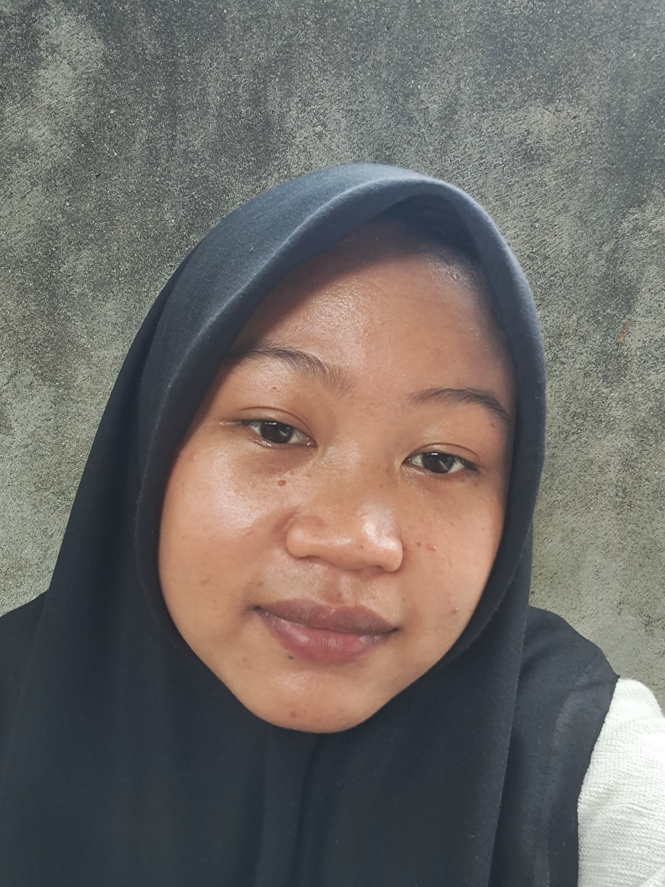

Nama : Yeda Mutiara
NPM : E1G022028
Prodi : Teknologi Industri Pertanian
Universitas : Universitas Bengkulu
Email : yedamutiara444@gmail.com
Asal : Darat Sawah, Seginim, Bengkulu Selatan
Hobi : Masak
Warna Faporit : Hitam
Foto :
| Hari | Jam | Mata Kuliah | Dosen | Ruangan |
|---|---|---|---|---|
| Senin | 08:00 - 09:40 | Komputer & Pemograman | Arina Fatharani, S.T.P., M.Sc | Diklat 3 R.20 | Fitri Yuwita S, S.TP., M.P. |
| 10.00 - 11.40 | Rekayasa Proses | Drs.Bosman Sidebang, M.P | Diklat 3 R.20 | Wica Elvina, M.Si | Ir. Wuri Marsigit M.AppSc |
| 12.00 - 13.40 | Riset Operasiaonal | Ir. Marniza., M.Si | GB 1 R.11 | Drs. Evanila Silvia, STP, M.Si |
| 14.00 - 15.40 | Karya Tulis Ilmiah | Prof. Dr. Ir. Yuwana, M.Sc. | GB 1 R.4 | Fitri Electrika Dewi S. STP., M.Sc |
| Selasa | 08:00 - 09:40 | Pangan & Gizi | Ir. Laili Susanti. M.Si | GB 1 R. 09 | Ir. Wuri Marsigit M.AppSc |
| Dra. Devi Silsia. M.Si | Rabu | 10:00 - 11:40 | Bahasa Inggris Akademik | Ir. Wuri Marsigit M.AppSc | Diklat 3 R.20 | Arina Fatharani, S.T.P., M.Sc | Firmansyah, S.T., M.Sc | 14:00 - 15:40 | Analisis Pengambilan Keputusan | Ir. Hidayat Koto, M.Sc | GB 1 R. 04 | Ika Gusriani, S.TP., M.P | Kamis | 10:00 - 11:40 | Kimia Industri Pertanian | Dra., Devi Silsia. M.Si | GB 1 R.02 | Drs., Syafnil, M.Si | 12:00 - 11:40 | Studi Lapang Industri Pertanian | Ir. Lukman Hidayat., MP | GB 1 R.04 | Drs., Syafnil, M.Si | Ir. Laili Susanti. M.Si | Jumat | 08:00 - 09:40 | Teknologi Hasil Perkebunan | Dr., Yazid Ismi Intara, S.P., M.Si | GB 1 R.09 | Sri Wulandari, S.T.P., M.Sc | Ir. Marniza., M.Si | 10:00 - 11:40 | Sanitasi Industri | Dra. Devi Silsia. M.Si | Diklat 3 R.20 | Drs., Syafnil, M.Si |